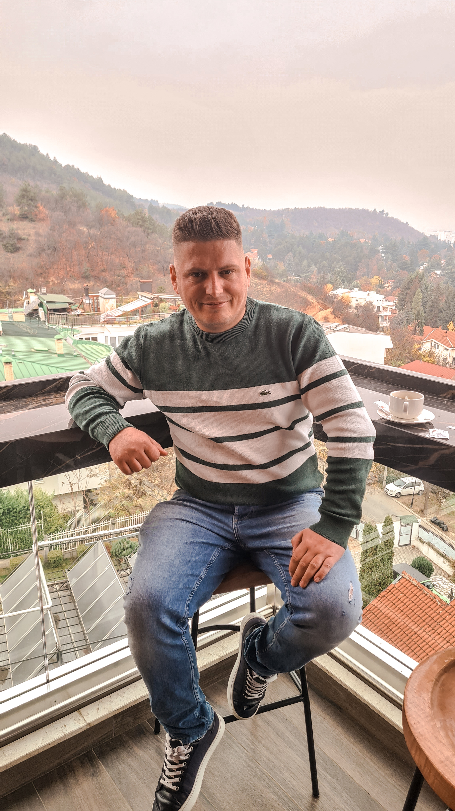

Haki Thaqi, ka lindur ne 1992 Llapushnik KK-Drenas, Republika e Kosoves
Shkollen fillore e ka perfunduar ne vendlindjen, shkollen e mesme ne Drenas, ndersa eshte prezent ne fakultetin e "Shkencave Kompjuterike" ne AAB Prishtine.
Punon si zyrtar policor ne Policia e Kosoves.
Puno shume ne heshtje lere suksesin te jete zhurma jote!
Adresa:
Rr. Ismail Thaqi nr.8, Llapushnik